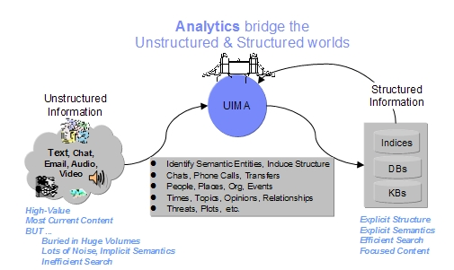

The "Getting Started: Why UIMA" guide should help you to understand what UIMA™ is, what it can be used for, and how you can use it.
UIMA stands for Unstructured Information Management Architecture and is a component architecture and software framework implementation for the analysis of unstructured content like text, video and audio data. Unstructured information represents the largest, most current and fastest growing source of information available to businesses and governments.
The motivation to develop such a framework was to build a common platform for unstructured analytics, to foster reuse of analysis components and to reduce duplication of analysis development. The pluggable architecture of UIMA allows to easily plug-in your own analysis components and combine them together with others. A full analysis task of a solution using unstructured analytics like search or government intelligence applications is often not a monolithic thing but a multi-stage process where different modules need to build on each other to get a powerful analysis chain. In some cases also annotators from different specialized vendors may need to work together to produce the results needed. The UIMA application interested in such analysis results does not need to know the details of how annotators work together to create the results. The UIMA framework take care of the integration and orchestration of multiple annotators.
So the major goal of UIMA is to transform unstructured information to structured information by orchestrating analysis engines to detect entities or relations and thus to build the bridge between the unstructured and the structured world.
|
 |
UIMA is, by itself, an empty framework. Its purpose is to enable a world-wide, diverse community to develop inter-operable, often complex analytic components, and allow them to be combined and run together, with framework supplied scaled-out and remoting as needed. Some of the major external UIMA resources are linked on the Apache UIMA website "UIMA Resources on the Web". You can also check the UIMA Addons and Sandbox for components that can be used and combined to build your own application.
There are lots of use cases where UIMA may be applicable. One of the major ones are search applications. Within search applications, the unstructured content that is available mainly as text in various kinds must be processed and analyzed to be searchable. To obtain a powerful search application, the text content must be analyzed to get the document language followed by language dependent linguistic processing such as tokenization, lemmatization and part of speech detection. After these steps a more sophisticated analysis like entity detection and relation detection between entities can be done. For all these analysis steps UIMA and UIMA components can be used.
Another important use case is business or government intelligence. For example, UIMA analysis is used to extract structured information from car repair reports. This data is then used for quality feed-back and problem early warning systems.
Other possible solutions where UIMA can be used for are the analsyis of call center notes to detect product problems and customer issues or a public image monitoring solution to find out how others for example in internet forums or press releases think about my product or company.